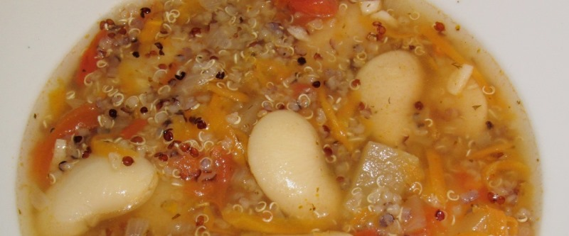

Суп из киноа и белой фасоли

Налить масло в большую кастрюлю с толстым дном, поставить на средний огонь, положить в масло мелконарезанные 2 луковицы, 2 морковки и 2 стебля сельдерея, пассировать 5 минут. Затем добавить 400 гр. консервированной фасоли, мелконарезанные 2 зубчика чеснока и пожарить еще пару минут. Добавить 400 гр. консервированных помидоров и 2 л. кипятка, варить 20 минут. Всыпать 130 гр. киноа, добавить петрушку, орегано или иную зелень и лавровый лист. Варить 15 минут, пока киноа не разварится. Посолить и поперчить по вкусу.